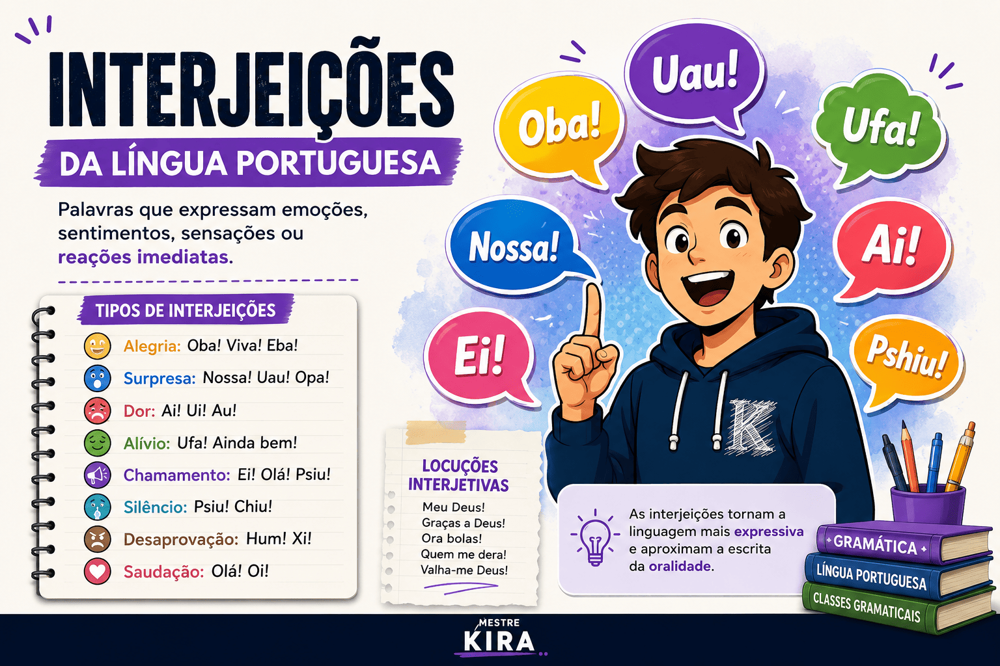

Interjeições da Língua Portuguesa: conceito, classificação, tipos, exemplos e exercícios
As interjeições são palavras ou expressões utilizadas para manifestar emoções, sentimentos, sensações, estados de espírito ou reações imediatas diante de uma situação. Elas desempenham um importante papel na comunicação porque tornam a linguagem mais expressiva e aproximam a escrita da oralidade.
No estudo da Língua Portuguesa, as interjeições aparecem com frequência em histórias em quadrinhos, diálogos, textos literários, propagandas, letras de músicas e também em questões de vestibulares, concursos públicos e do ENEM, que costumam explorar seus efeitos de sentido dentro do contexto.
Neste guia do Mestre Kira, você aprenderá o que são interjeições, conhecerá seus principais tipos, verá dezenas de exemplos, compreenderá sua diferença em relação às locuções interjetivas e descobrirá como esse conteúdo é cobrado nas provas.

O que são interjeições?
As interjeições são palavras invariáveis que expressam emoções, sentimentos, desejos, reações ou estados emocionais de maneira espontânea.
Em muitos casos, uma única palavra consegue transmitir uma mensagem completa, dispensando uma oração inteira.
Exemplos:
Ah! Finalmente consegui.
Ufa! Que calor!
Nossa! Você mudou bastante.
Ei! Espere um instante.
Parabéns! Você foi aprovado.
Observe que, em todos os exemplos, a interjeição transmite imediatamente um sentimento ou uma reação do falante.
Características das interjeições
As interjeições apresentam algumas características importantes.
- São palavras invariáveis.
- Expressam sentimentos ou emoções.
- Dependem do contexto para produzir sentido.
- São comuns na linguagem oral.
- Aparecem frequentemente acompanhadas de ponto de exclamação.
- Podem constituir um enunciado completo.
Importante: uma mesma interjeição pode expressar sentimentos diferentes dependendo da situação comunicativa.
Classificação das interjeições
Embora não exista uma classificação absolutamente rígida, costuma-se organizar as interjeições conforme o sentimento predominante que expressam.
| Sentimento | Interjeições | Exemplo |
|---|---|---|
| Alegria | Ah!, Viva!, Oba!, Eba! | Oba! Hoje não haverá aula. |
| Admiração | Nossa!, Uau!, Oh! | Nossa! Que paisagem bonita. |
| Surpresa | Opa!, Ué!, Hein? | Ué! Você já voltou? |
| Dor | Ai! | Ai! Machuquei o dedo. |
| Alívio | Ufa! | Ufa! Cheguei a tempo. |
| Medo | Socorro!, Credo! | Socorro! Há fumaça! |
| Silêncio | Psiu!, Chiu! | Psiu! A prova começou. |
| Chamamento | Ei!, Olá!, Psiu! | Ei! Venha aqui. |
| Desaprovação | Hum!, Xi! | Xi! Isso não vai dar certo. |
| Saudação | Olá!, Oi! | Olá! Como você está? |
Principais tipos de interjeições
Interjeições de alegria
Viva!
Oba!
Eba!
Ah!
Interjeições de dor
Ai!
Ui!
Au!
Interjeições de surpresa
Nossa!
Uau!
Opa!
Ué!
Interjeições de alívio
Ufa!
Ainda bem!
Interjeições de chamamento
Ei!
Olá!
Psiu!
Interjeições de silêncio
Psiu!
Chiu!
Silêncio!
O contexto modifica o sentido
Uma característica importante das interjeições é que seu significado depende do contexto.
Nossa! Que notícia maravilhosa!
Nossa... Que situação complicada.
Em ambos os casos aparece a mesma palavra, mas os sentimentos transmitidos são diferentes.
O que são locuções interjetivas?
As locuções interjetivas são expressões formadas por duas ou mais palavras que exercem a função de uma interjeição.
Meu Deus!
Ora bolas!
Graças a Deus!
Quem me dera!
Valha-me Deus!
Interjeição x locução interjetiva
| Interjeição | Locução interjetiva |
|---|---|
| Uma única palavra. | Duas ou mais palavras. |
| Ai! | Meu Deus! |
| Ufa! | Graças a Deus! |
| Ei! | Ora essa! |
Interjeições e pontuação
Normalmente as interjeições aparecem acompanhadas de ponto de exclamação, pois representam emoções intensas.
Ai!
Nossa!
Parabéns!
Socorro!
Entretanto, dependendo da intenção do autor, também podem aparecer acompanhadas de vírgulas, reticências ou ponto de interrogação.
Ah... agora entendi.
Ué?
Nossa...
Interjeições no ENEM e nos vestibulares
O ENEM raramente cobra a simples definição de interjeição. Em geral, as questões exploram os efeitos de sentido produzidos por essas palavras dentro do contexto.
Por isso, é importante compreender:
- o sentimento expresso;
- a intenção comunicativa;
- o contexto da fala;
- o efeito de expressividade;
- a relação com as funções da linguagem.
Para aprofundar esse estudo, leia também:
Questão comentada
Questão
Na frase "Ufa! Finalmente terminei a prova.", a interjeição expressa:
A) Dor
B) Medo
C) Alívio
D) Tristeza
E) Dúvida
Resposta: alternativa C.
A interjeição "Ufa!" transmite a sensação de alívio após o término de uma situação cansativa ou preocupante.
Resumo
- Interjeições são palavras invariáveis.
- Expressam emoções, sentimentos e reações.
- Seu significado depende do contexto.
- Podem formar um enunciado completo.
- Locuções interjetivas são expressões com valor de interjeição.
- O ENEM costuma cobrar seus efeitos de sentido.
Perguntas frequentes sobre interjeições
O que são interjeições?
São palavras invariáveis utilizadas para expressar emoções, sentimentos ou reações imediatas.
Interjeições possuem flexão?
Não. Elas são palavras invariáveis.
Qual a diferença entre interjeição e locução interjetiva?
A interjeição é formada por uma única palavra. A locução interjetiva é composta por duas ou mais palavras que exercem a mesma função.
O ENEM cobra interjeições?
Sim. Geralmente a cobrança ocorre dentro da interpretação textual e dos efeitos de sentido produzidos pela linguagem.